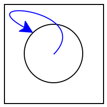

16.1 Sharing and Equality
16.1.1 Re-Examining Equality
Consider the following data definition and example values:
data BT {
Leaf;
Node(v, BT l, BT r);
}
a-tree = node(5, node(4, leaf, leaf), node(4, leaf, leaf));
b-tree = block: four-node = node(4, leaf, leaf);
node(5, four-node, four-node);In particular, it might seem that the way we’ve written
b-tree
is morally equivalent to how we’ve written
a-tree,
but we’ve created a helpful binding to avoid code duplication.
Because both
a-tree
and
b-tree
are bound to trees with
5
at the root and a left and right child each containing
4,
we can indeed reasonably consider these trees equivalent. Sure enough:
@Check void test() {
assertEquals(a-tree, b-tree);
assertEquals(a-tree.l, a-tree.l);
assertEquals(a-tree.l, a-tree.r);
assertEquals(b-tree.l, b-tree.r);
}However, there is another sense in which these trees are not
equivalent. concretely,
a-tree
constructs a distinct node for each child, while
b-tree
uses the same node for both children. Surely this difference should show
up somehow, but we have not yet seen a way to write a program that will
tell these apart.
By default, the
is
operator uses the same equality test as Jayret’s
==.
There are, however, other equality tests in Jayret. In particular, the
way we can tell apart these data is by using Jayret’s
identical
function, which implements reference equality. This checks not only
whether two values are structurally equivalent but whether they are the
result of the very same act of value construction. With this, we can now
write additional tests:
@Check void test() {
assertEquals(identical(a-tree, b-tree), false);
assertEquals(identical(a-tree.l, a-tree.l), true);
assertEquals(identical(a-tree.l, a-tree.r), false);
assertEquals(identical(b-tree.l, b-tree.r), true);
}Let’s step back for a moment and consider the behavior that gives us
this result. We can visualize the different values by putting each
distinct value in a separate location alongside the running program. We
can draw the first step as creating a
node
with value
4:
a-tree = node(5, 1001, node(4, leaf, leaf)) b-tree = block: four-node = node(4, leaf, leaf) node(5, four-node, four-node) end
Heap
- 1001:
node(4, leaf, leaf)
The next step creates another node with value
4,
distinct from the first:
a-tree = node(5, 1001, 1002) b-tree = block: four-node = node(4, leaf, leaf) node(5, four-node, four-node) end
Heap
- 1001:
node(4, leaf, leaf) - 1002:
node(4, leaf, leaf)
Then the
node
for
a-tree
is created:
a-tree = 1003 b-tree = block: four-node = node(4, leaf, leaf) node(5, four-node, four-node) end
Heap
- 1001:
node(4, leaf, leaf) - 1002:
node(4, leaf, leaf) - 1003:
node(5, 1001, 1002)
When evaluating the
block
for
b-tree,
first a single node is created for the
four-node
binding:
a-tree = 1003 b-tree = block: four-node = 1004 node(5, four-node, four-node) end
Heap
- 1001:
node(4, leaf, leaf) - 1002:
node(4, leaf, leaf) - 1003:
node(5, 1001, 1002) - 1004:
node(4, leaf, leaf)
These location values can be substituted just like any other, so they
get substituted for
four-node
to continue evaluation of the
block.We skipped substituting
a-tree
for the moment, that will come up later.
a-tree = 1003 b-tree = block: node(5, 1004, 1004) end
Heap
- 1001:
node(4, leaf, leaf) - 1002:
node(4, leaf, leaf) - 1003:
node(5, 1001, 1002) - 1004:
node(4, leaf, leaf)
Finally, the node for
b-tree
is created:
a-tree = 1003 b-tree = 1005
Heap
- 1001:
node(4, leaf, leaf) - 1002:
node(4, leaf, leaf) - 1003:
node(5, 1001, 1002) - 1004:
node(4, leaf, leaf) - 1005:
node(5, 1004, 1004)
This visualization can help us explain the test we wrote using
identical.
Let’s consider the test with the appropriate location references
substituted for
a-tree
and
b-tree:
check: identical(1003, 1005) is false identical(1003.l, 1003.l) is true identical(1003.l, 1003.r) is false identical(1005.l, 1005.r) is true end
Heap
- 1001:
node(4, leaf, leaf) - 1002:
node(4, leaf, leaf) - 1003:
node(5, 1001, 1002) - 1004:
node(4, leaf, leaf) - 1005:
node(5, 1004, 1004)
check: identical(1003, 1005) is false identical(1001, 1001) is true identical(1001, 1004) is false identical(1004, 1004) is true end
Heap
- 1001:
node(4, leaf, leaf) - 1002:
node(4, leaf, leaf) - 1003:
node(5, 1001, 1002) - 1004:
node(4, leaf, leaf) - 1005:
node(5, 1004, 1004)
There is actually another way to write these tests in Jayret: the
is
operator can also be parameterized by a different equality predicate
than the default
==.
Thus, the above block can equivalently be written
as:We can use
is-not
to check for expected failure of equality.
@Check void test() {
assertNotEquals(a-tree, b-tree);
assertEquals(a-tree.l, a-tree.l);
assertNotEquals(a-tree.l, a-tree.r);
assertEquals(b-tree.l, b-tree.r);
}We will use this style of equality testing from now on.
Observe how these are the same values that were compared earlier (
@Check void test() {
assertEquals(a-tree, b-tree);
assertNotEquals(a-tree, b-tree);
assertEquals(a-tree.l, a-tree.r);
assertNotEquals(a-tree.l, a-tree.r);
}Later we will return both to what
identical
really means [Understanding
Equality] (Jayret has a full range of equality operations suitable
for different situations).
Exercise
There are many more equality tests we can and should perform even with the basic data above to make sure we really understand equality and, relatedly, storage of data in memory. What other tests should we conduct? Predict what results they should produce before running them!
16.1.2 The Cost of Evaluating References
From a complexity viewpoint, it’s important for us to understand how
these references work. As we have hinted,
four-node
is computed only once, and each use of it refers to the same value: if,
instead, it was evaluated each time we referred to
four-node,
there would be no real difference between
a-tree
and
b-tree,
and the above tests would not distinguish between them.
This is especially relevant when understanding the cost of function evaluation. We’ll construct two simple examples that illustrate this. We’ll begin with a contrived data structure:
L = range(0, 100);Suppose we now define
L1 = link(1, L);
L2 = link(-1, L);Constructing a list clearly takes time at least proportional to the
length; therefore, we expect the time to compute
L
to be considerably more than that for a single
link
operation. Therefore, the question is how long it takes to compute
L1
and
L2
after
L
has been computed: constant time, or time proportional to the length of
L?
The answer, for Jayret, and for most other contemporary languages
(including Java, C#, OCaml, Racket, etc.), is that these additional
computations take constant time. That is, the value bound to
L
is computed once and bound to
L;
subsequent expressions refer to this value (hence “reference”) rather
than reconstructing it, as reference equality shows:
@Check void test() {
assertEquals(L1.rest, L);
assertEquals(L2.rest, L);
assertEquals(L1.rest, L2.rest);
}Similarly, we can define a function, pass
L
to it, and see whether the resulting argument is
identical
to the original:
Object check-for-no-copy(another-l) {
return identical(another-l, L);
}
@Check void test() {
assertEquals(check-for-no-copy(L), true);
}or, equivalently,
@Check void test() {
assertSatisfies(L, check-for-no-copy);
}Therefore, neither built-in operations (like
.rest)
nor user-defined ones (like
check-for-no-copy)
make copies of their
arguments.Strictly speaking, of course, we cannot conclude that no copy was made.
Jayret could have made a copy, discarded it, and still passed a
reference to the original. Given how perverse this would be, we can
assume—and take the language’s creators’ word for it—that this doesn’t
actually happen. By creating extremely large lists, we can also use
timing information to observe that the time of constructing the list
grows proportional to the length of the list while the time of passing
it as a parameter remains constant. The important
thing to observe here is that, instead of simply relying on authority,
we have used operations in the language itself to understand how the
language behaves.
16.1.3 Notations for Equality
Until now we have used
==
for equality. Now we have learned that it’s only one of multiple
equality operators, and that there is another one called
identical.
However, these two have somewhat subtly different syntactic properties.
identical
is a name for a function, which can therefore be used to refer to it
like any other function (e.g., when we need to mention it in a
is-not
clause). In contrast,
==
is a binary operator, which can only be used in the middle of
expressions.
This should naturally make us wonder about the other two
possibilities: a binary expression version of
identical
and a function name equivalent of
==.
They do, in fact, exist! The operation performed by
==
is called
equal-always.
Therefore, we can write the first block of tests equivalently, but more
explicitly, as
@Check void test() {
assertEquals(a-tree, b-tree);
assertEquals(a-tree.l, a-tree.l);
assertEquals(a-tree.l, a-tree.r);
assertEquals(b-tree.l, b-tree.r);
}Conversely, the binary operator notation for
identical
is
<=>.
Thus, we can equivalently write
check-for-no-copy
as
Object check-for-no-copy(another-l) {
return another-l <=> L;
}16.1.4 On the Internet, Nobody Knows You’re a DAG
Despite the name we’ve given it,
b-tree
is not actually a tree. In a tree, by definition, there are no shared
nodes, whereas in
b-tree
the node named by
four-node
is shared by two parts of the tree. Despite this, traversing
b-tree
will still terminate, because there are no cyclic references in it: if
you start from any node and visit its “children”, you cannot end up back
at that node. There is a special name for a value with such a shape:
directed acyclic graph (DAG).
Many important data structures are actually a DAG underneath. For instance, consider Web sites. It is common to think of a site as a tree of pages: the top-level refers to several sections, each of which refers to sub-sections, and so on. However, sometimes an entry needs to be cataloged under multiple sections. For instance, an academic department might organize pages by people, teaching, and research. In the first of these pages it lists the people who work there; in the second, the list of courses; and in the third, the list of research groups. In turn, the courses might have references to the people teaching them, and the research groups are populated by these same people. Since we want only one page per person (for both maintenance and search indexing purposes), all these personnel links refer back to the same page for people.
Let’s construct a simple form of this. First a datatype to represent a site’s content:
data Content {
Page(String s);
Section(String title, List<Object> sub);
}Let’s now define a few people:
people-pages = section("People", [page("Church"), page("Dijkstra"), page("Hopper")]);and a way to extract a particular person’s page:
Object get-person(n) {
return get(people-pages.sub, n);
}Now we can define theory and systems sections:
theory-pages = section("Theory", [get-person(0), get-person(1)]);
systems-pages = section("Systems", [get-person(1), get-person(2)]);which are integrated into a site as a whole:
site = section("Computing Sciences", [theory-pages, systems-pages]);Now we can confirm that each of these luminaries needs to keep only one Web page current; for instance:
@Check void test() {
theory = get(site.sub, 0);
systems = get(site.sub, 1);
theory-dijkstra = get(theory.sub, 1);
systems-dijkstra = get(systems.sub, 0);
assertEquals(theory-dijkstra, systems-dijkstra);
assertEquals(theory-dijkstra, systems-dijkstra);
}16.1.5 It’s Always Been a DAG
What we may not realize is that we’ve actually been creating a DAG
for longer than we think. To see this, consider
a-tree,
which very clearly seems to be a tree. But look more closely not at the
nodes
but rather at the
leaf(s).
How many actual
leafs
do we create?
One hint is that we don’t seem to call a function when creating a
leaf:
the data definition does not list any fields, and when constructing a
BT
value, we simply write
leaf,
not (say)
leaf().
Still, it would be nice to know what is happening behind the scenes. To
check, we can simply ask Jayret:
@Check void test() {
assertEquals(leaf, leaf);
}It’s important that we not write
leaf <=> leaf
here, because that is just an expression whose result is ignored. We
have to write
is
to register this as a test whose result is checked and reported.
and this check passes. That is, when we write a variant without any
fields, Jayret automatically creates a singleton: it makes just one
instance and uses that instance everywhere. This leads to a more
efficient memory representation, because there is no reason to have lots
of distinct
leafs
each taking up their own memory. However, a subtle consequence of that
is that we have been creating a DAG all along.
If we really wanted each
leaf
to be distinct, it’s easy: we can write
data BTDistinct {
Leaf();
Node(v, BTDistinct l, BTDistinct r);
}Then we would need to use the
leaf
function everywhere:
c-tree = node(5, node(4, leaf(), leaf()), node(4, leaf(), leaf()));And sure enough:
@Check void test() {
assertNotEquals(leaf(), leaf());
}16.1.6 From Acyclicity to Cycles
Here’s another example that arises on the Web. Suppose we are constructing a table of output in a Web page. We would like the rows of the table to alternate between white and grey. If the table had only two rows, we could map the row-generating function over a list of these two colors. Since we do not know how many rows it will have, however, we would like the list to be as long as necessary. In effect, we would like to write:
web-colors = link("white", link("grey", web-colors));to obtain an indefinitely long list, so that we could eventually write
map2(color-table-row, table-row-content, web-colors);which applies a
color-table-row
function to two arguments: the current row from
table-row-content,
and the current color from
web-colors,
proceeding in lockstep over the two lists.
Unfortunately, there are many things wrong with this attempted definition.
Do Now!
Do you see what they are?
Here are some problems in turn:
This will not even parse. The identifier
web-colorsis not bound on the right of the=.Earlier, we saw a solution to such a problem: use
rec[Streams From Functions]. What happens if we writerec web-colors = link("white", link("grey", web-colors));instead?
Exercise
Why does
recwork in the definition ofonesbut not above?Assuming we have fixed the above problem, one of two things will happen. It depends on what the initial value of
web-colorsis. Because it is a dummy value, we do not get an arbitrarily long list of colors but rather a list of two colors followed by the dummy value. Indeed, this program will not even type-check.Suppose, however, that
web-colorswere written instead as a function definition to delay its creation:Object web-colors() { return link("white", link("grey", web-colors())); }On its own this just defines a function. If, however, we use it—
web-colors()—it goes into an infinite loop constructinglinks.Even if all that were to work,
map2would either (a) not terminate because its second argument is indefinitely long, or (b) report an error because the two arguments aren’t the same length.
All these problems are symptoms of a bigger issue. What we are trying to do here is not merely create a shared datum (like a DAG) but something much richer: a cyclic datum, i.e., one that refers back to itself:

When you get to cycles, even defining the datum becomes difficult because its definition depends on itself so it (seemingly) needs to already be defined in the process of being defined. We will return to cyclic data later in Cyclic Data, and to this specific example in Recursion and Cycles from Mutation.